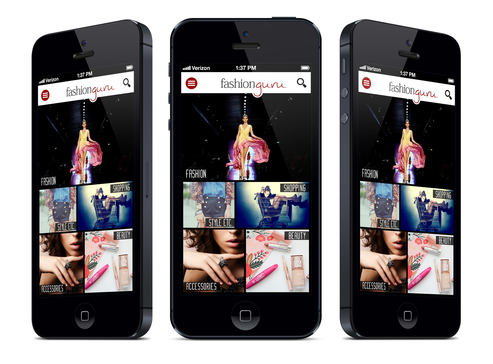
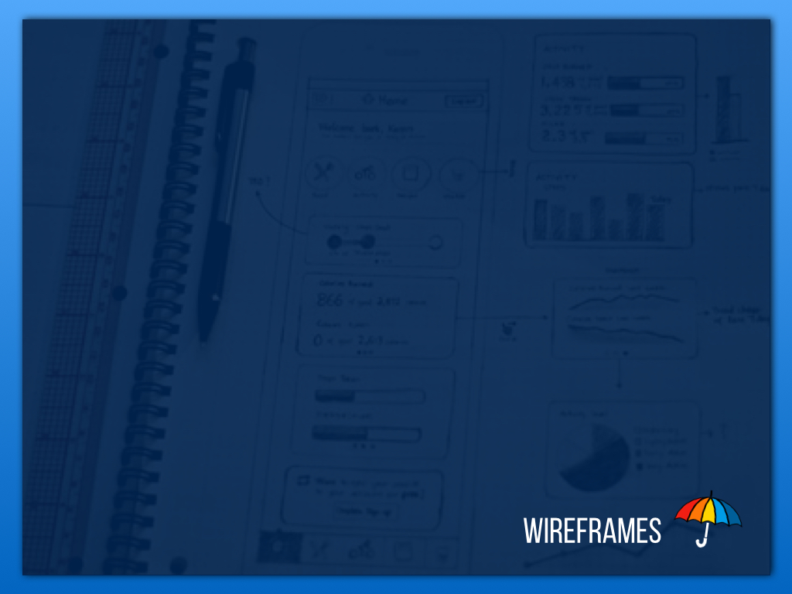
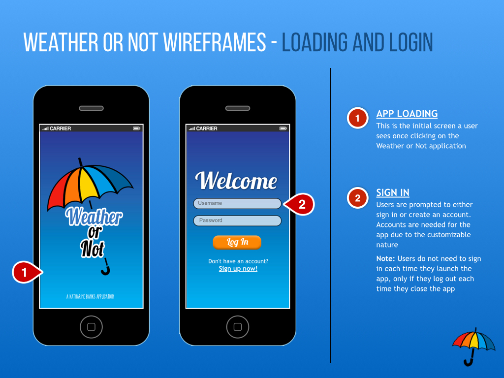
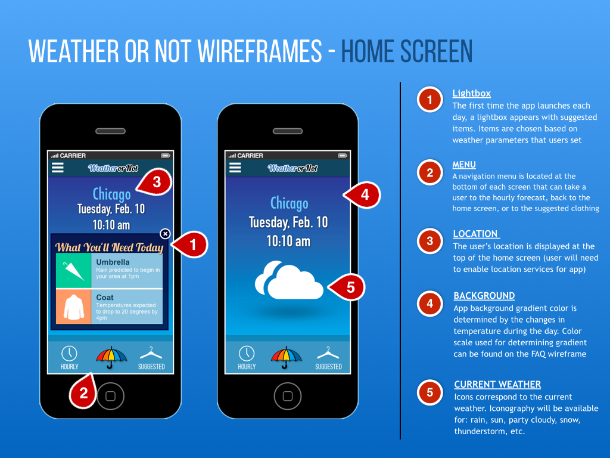
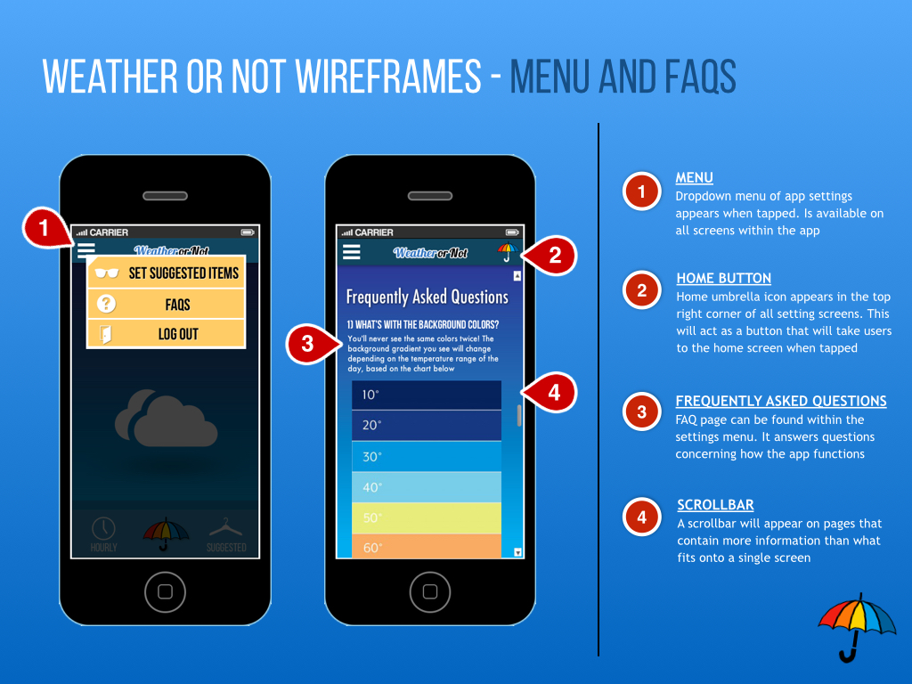
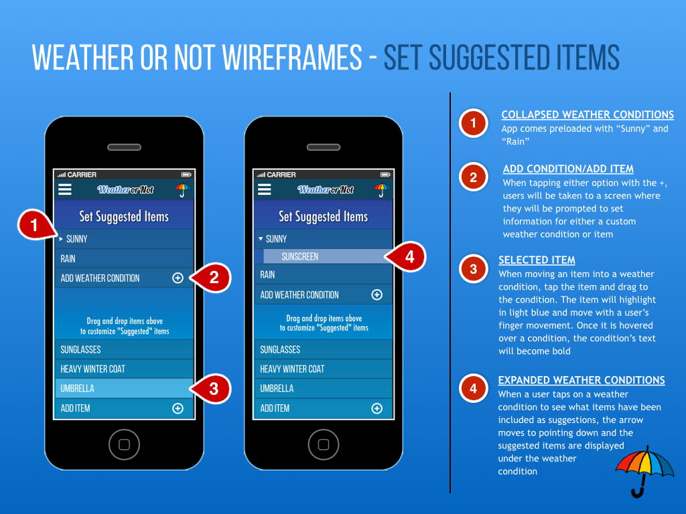
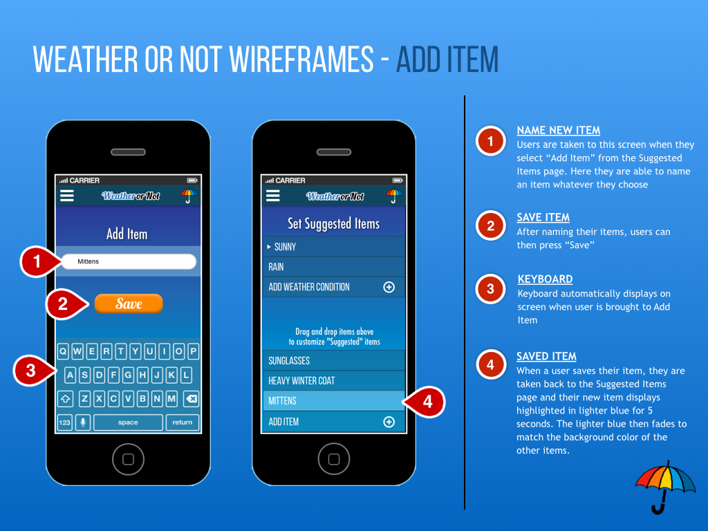
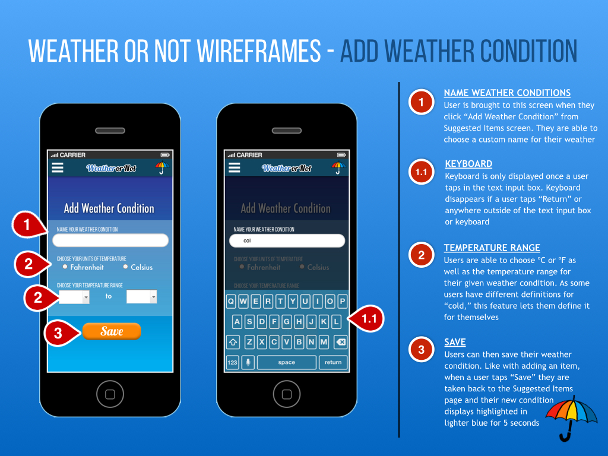
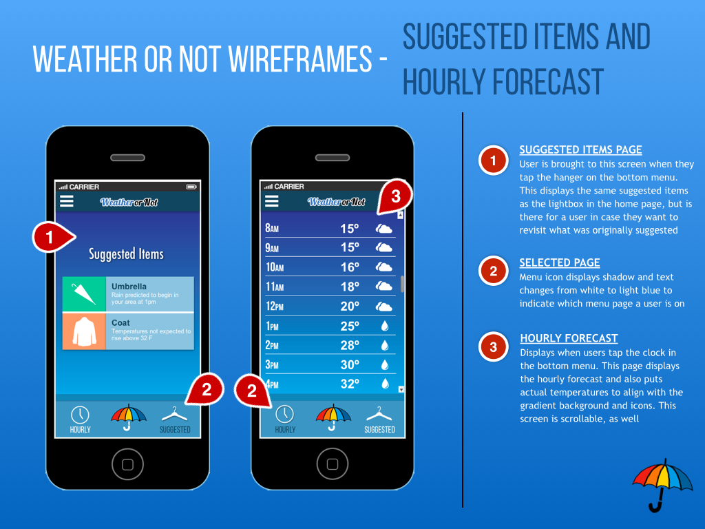

Home
Resume
Graduate
UX Work
Other
UX Design
Graphic
Design
Portfolio
FashionGuru
DonorPath Registration
Weather App
Check back soon for updates on this app!

DonorPath Registration Redesign
Use the sliders on the images below to see portions of the redesign
Actual pages can be found via the
DonorPath website
Weather Or Not Application
Use image slider to view annotated wireframes, and see full project deck below
       